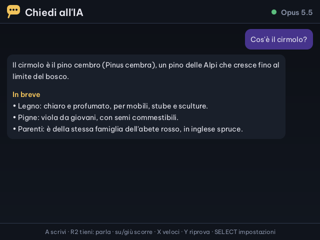
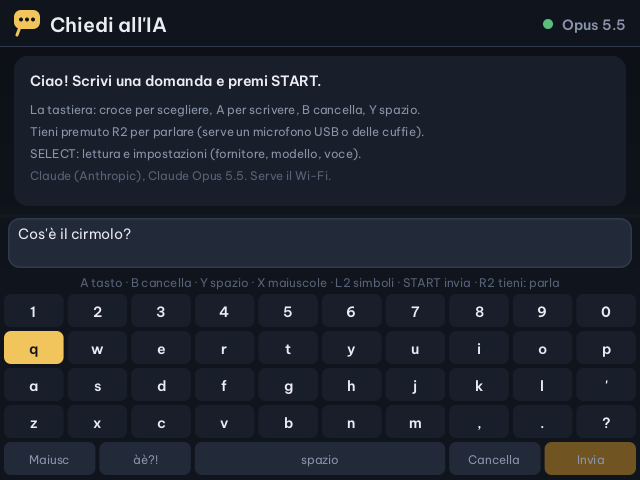
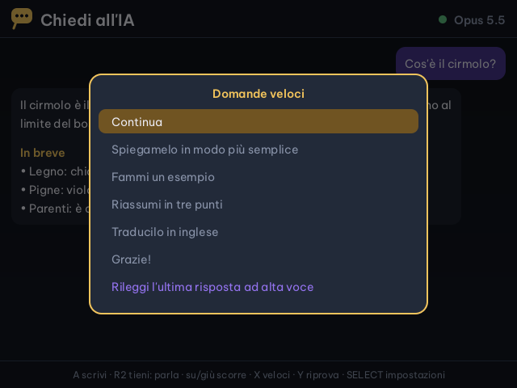
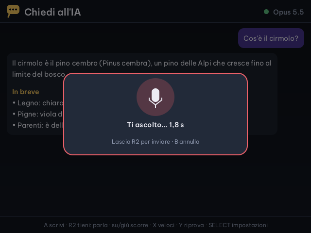
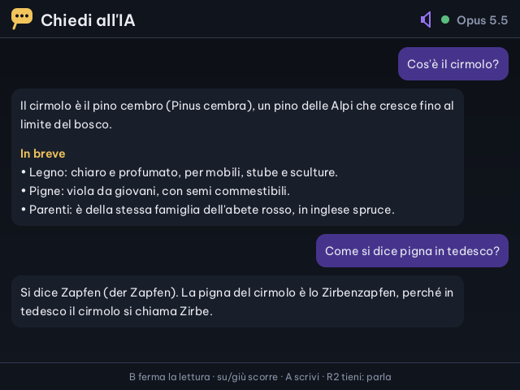
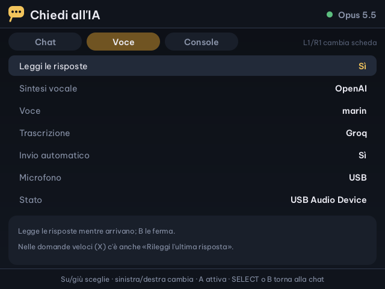
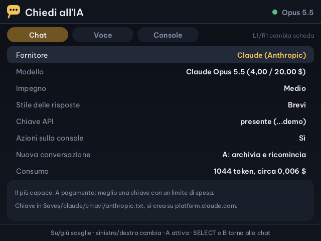
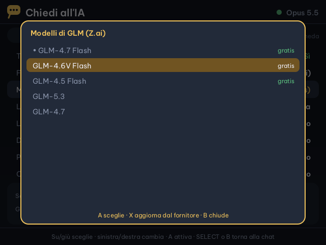

Cirmolo · intelligenza artificiale sulla Miyoo Flip
Chiedi all'IA
Una chat con Claude e con molti altri modelli, da scrivere con la tastiera a schermo o da dire a voce tenendo premuto R2. Le risposte compaiono mentre il modello le scrive, con titoli ed elenchi, e si possono ascoltare.
Il modello può anche fare qualcosa sulla console: alzare il volume, cercare un gioco e avviarlo.
In App, cartella Altro. Servono il Wi-Fi e una chiave API del fornitore, che resta solo sulla scheda SD.

Scrivere e leggere
Una tastiera a schermo, o quella USB
Nella pagina della chat si scrive con la tastiera a schermo; una tastiera USB collegata alla porta USB-C scrive direttamente. START invia. Mentre la risposta arriva si legge e si scorre con la croce.

Mentre scrivi
| Croce · A | sceglie il tasto · lo preme |
| B · Y | cancella · spazio |
| X · L2 | maiuscole · simboli e lettere accentate |
| START | invia |
Mentre leggi
| Su · giù | scorre la conversazione |
| A | torna a scrivere |
| X | domande veloci |
| Y | riprova l'ultima domanda |
| B | ferma la risposta o la lettura |
| SELECT | impostazioni |
| MENU | esce; la conversazione resta salvata |

Domande veloci
Continua, spiegamelo in modo più semplice, fammi un esempio, riassumi in tre punti, traducilo in inglese, grazie. E «Rileggi l'ultima risposta ad alta voce».
Una conversazione alla volta
La conversazione resta anche quando esci. Nelle impostazioni, «Nuova conversazione» la archivia in un file di testo e ne apre una nuova.
A voce
Tieni premuto R2 e parla
Quando lasci R2 la voce diventa testo e la domanda parte; B mentre parli annulla. Al massimo un minuto per volta. Le risposte possono essere lette ad alta voce frase per frase, mentre arrivano.



- Trascrizionechi trasforma la voce in testo: Groq (Whisper, con un piano gratuito), OpenAI o Gemini
- Sintesi vocalechi legge le risposte: OpenAI, con voci naturali a pagamento, o Gemini, con limiti gratuiti; la voce si sceglie
- Invio automaticosì: la domanda parte appena lasci R2; no: il testo va nella casella, da correggere e inviare con START
- Microfonoun microfono o delle cuffie USB-C, anche collegati ad app aperta; le cuffie Bluetooth sono in prova (passano alla modalità telefono, a 8 kHz)
Fornitori e modelli
Claude per primo, e altri undici
Il fornitore e il modello si scelgono nelle impostazioni, anche a metà conversazione. Accanto a ogni modello c'è il prezzo in dollari per milione di token, oppure «gratis». Con X l'elenco dei modelli si aggiorna dal fornitore.


La chiave API
Si crea sul sito del fornitore. Si mette dal PC nel file Saves/claude/chiavi/<fornitore>.txt della SD, oppure dall'app: SELECT, «Chiave API», A, la scrivi e START.
Server tuoi
Il file Saves/claude/fornitori.json aggiunge qualunque server compatibile con OpenAI, per esempio Ollama sul PC di casa.
Impegno e stile
L'impegno, solo per Claude, è quanto ragiona prima di rispondere. Lo stile «Brevi» dà risposte corte, adatte allo schermo piccolo.
Le chiavi restano sulla scheda SD e vanno solo al loro fornitore. Il login con l'abbonamento a claude.ai non vale per le app come questa: serve una chiave API.
Azioni sulla console
«Apri Zelda»
Con «Azioni sulla console» acceso, il modello può usare alcuni strumenti della Flip. Funziona con tutti i fornitori che li supportano; con gli altri l'app riprova senza.
Stato
Batteria e ricarica, data e ora, rete Wi-Fi, spazio libero sulla SD, temperatura, volume e luminosità.
Volume e luminosità
«Abbassa il volume», «più luce»: il volume va da 0 a 20, la luminosità da 0 a 10.
Cerca e avvia
Cerca i giochi sulla SD per titolo e sistema; se gli chiedi di aprirne uno, la chat si chiude e il gioco parte.
Diario delle partite
Legge le ultime partite: a cosa hai giocato, per quanto e dove eri rimasto.
Traduttore e schede
La scheda Console delle impostazioni accende il traduttore dei giochi, il diario e il promemoria: sono nella pagina L'IA nei giochi.
Cosa gioco?
Per farti consigliare un gioco della tua collezione c'è un'app apposta: Cosa gioco?
File sulla scheda SD
Tutto in Saves/claude
L'interfaccia segue la lingua di Cirmolo: italiano, inglese, spagnolo, francese, tedesco, portoghese (del Brasile e del Portogallo), catalano, polacco, rumeno e turco.
Saves/claude/chiavi/<fornitore>.txtle chiavi API, una per fornitoreSaves/claude/conversazione.jsonla conversazione apertaSaves/claude/archivio/le conversazioni chiuse, in testo sempliceSaves/claude/impostazioni.txtfornitore, modelli e scelteSaves/claude/fornitori.jsonfacoltativo: fornitori e server in piùSaves/claude/modelli/gli elenchi dei modelli scaricatiSaves/spruce/claude-chat.logil registro dell'appApp/ClaudeChat/srci sorgenti in C, con le prove automatiche
Le altre app